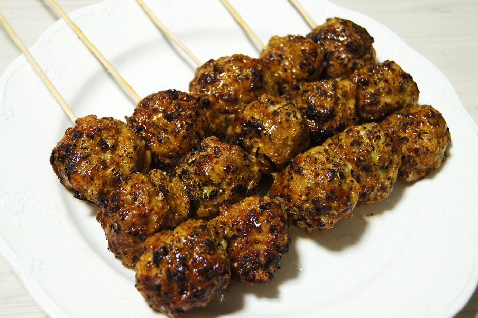

닭고기를 구워 만든 츠쿠네
츠쿠네(つくね): 다진 닭고기를 반죽하여 동그란 모양으로 만든 후 꼬치에 꿰어 구운 것이다. 물렁뼈를 섞어 그 식감을 좋게 한다.
츠쿠네는 술과도 잘 어울리기 때문에 이자카야(居酒屋, 술집)에서 술안주로 빠지지 않는 음식이다.
츠쿠네를 피망 안에 넣어 먹으면 훨씬 더 맛있게 즐길 수 있다.
츠쿠네(つくね): 다진 닭고기를 반죽하여 동그란 모양으로 만든 후 꼬치에 꿰어 구운 것이다. 물렁뼈를 섞어 그 식감을 좋게 한다.
츠쿠네는 술과도 잘 어울리기 때문에 이자카야(居酒屋, 술집)에서 술안주로 빠지지 않는 음식이다.
츠쿠네를 피망 안에 넣어 먹으면 훨씬 더 맛있게 즐길 수 있다.
1.일본식 절구 아타리바치에 닭다리 살, 소금을 넣고 곱게 간다. 고기 반죽에 달걀물을 넣어 치대듯 간다.
2.고기 반죽을 뭉쳐 모양을 잡고 예열한 프라이팬에 올려 굽는다. 분량의 재료로 만든 타래소스를 팬에 넣고 농도가 날 때까지 졸인다..
3.직화로 구운 색감과 풍미를 더하기 위해 토치로 살짝 구운 다음. 시치미를 살짝 뿌려 완성한다.